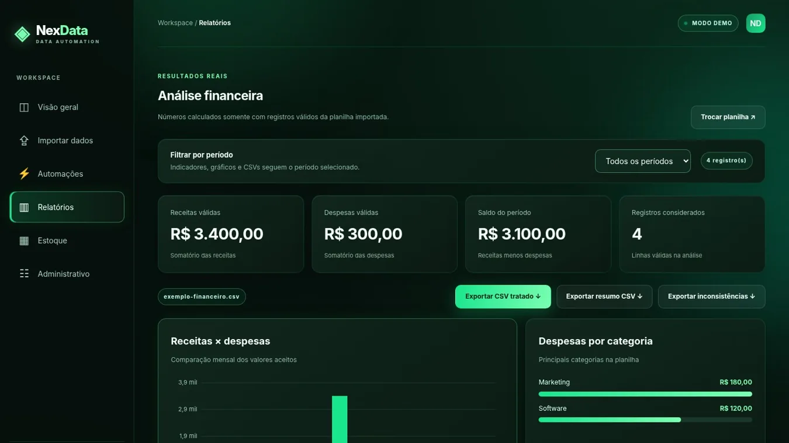
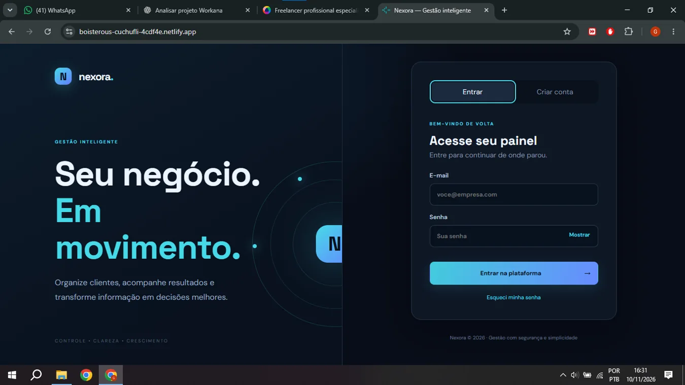

Sites & landing pages
Experiências responsivas, páginas comerciais, cardápios e apresentação digital para pequenos negócios.
Conhecer Bella Studio & Sabor da Praça ↗SYSTEM.INIT / DEV_ID: GABRIEL_LIMA
Estudante de Análise e Desenvolvimento de Sistemas e desenvolvedor web. Transformo desafios em sites, interfaces, sistemas e dashboards com foco na experiência de quem usa.


Serviços alinhados às tecnologias e aos tipos de solução que desenvolvi nos projetos apresentados.
Experiências responsivas, páginas comerciais, cardápios e apresentação digital para pequenos negócios.
Conhecer Bella Studio & Sabor da Praça ↗Interfaces para visualizar dados, explorar indicadores e importar/exportar arquivos CSV e Excel.
Conhecer NexData ↗Protótipos e ferramentas web com cadastros, painéis, tarefas e integração com banco de dados.
Conhecer Nexora & ShopCore ↗Refinamento visual, usabilidade, ajustes responsivos e modernização de páginas existentes.
Ver exemplos no portfólio ↗Explore as telas reais, conheça as tecnologias e veja cada projeto em funcionamento.
Nenhum projeto encontrado. Experimente outro termo.
ⓘ Estes são projetos autorais e demonstrativos de portfólio. Marcas, dados e cenários exibidos nas demonstrações não representam contratos reais.
PROJETO DEMONSTRATIVO / ONLINE
Um e-commerce demonstrativo premium que reúne experiência de compra pública e área protegida para gestão de produtos.
Demonstrar uma loja virtual que separa as páginas do visitante da administração protegida dos produtos.
Catálogo interativo, carrinho simulado, login de administrador e gestão de produtos integrada ao Supabase.
15 testes automatizados aprovados, build de produção concluído e políticas RLS revisadas. Sem pagamentos reais.
Sou Gabriel Lima, estudante de Análise e Desenvolvimento de Sistemas na Estácio, construindo minha experiência com projetos práticos.
Gosto de unir organização, criatividade e código para desenvolver soluções web claras e funcionais. Meu portfólio reúne desde sites comerciais até um sistema com autenticação e banco de dados e ferramentas de visualização de planilhas.
Estou em evolução constante, estudando novas tecnologias e dando atenção ao funcionamento, à usabilidade e à qualidade de cada entrega.
DA ORGANIZAÇÃO À TECNOLOGIA
Uno minha experiência com atividades administrativas e atendimento a projetos práticos de desenvolvimento web.
Cursando Análise e Desenvolvimento de Sistemas na Estácio. Aprendizado prático com interfaces web, aplicações e integrações.
Experiência em atividades administrativas e atendimento, aplicando organização, comunicação, atenção aos detalhes e responsabilidade com prazos.
Projetos demonstrativos autorais envolvendo sites responsivos, sistemas de gestão, dashboards e e-commerce com Supabase.
Tecnologias e ferramentas aplicadas nos projetos demonstrativos, sem porcentagens artificiais de domínio.
HTML5 · CSS3 · JavaScript · React · TypeScript
Aplicados a interfaces, sites e ShopCore.Supabase · SQL · CSV · Excel
Aplicações em Nexora, NexData e ShopCore.Git · GitHub · Vercel
Versionamento, testes e publicações online.Compreender o objetivo, os usuários e o que precisa ser resolvido.
Entrega: objetivos e requisitosPlanejar a experiência, os componentes e a navegação.
Entrega: estrutura e fluxosConstruir a solução com clareza, responsividade e atenção aos detalhes.
Entrega: implementação funcionalTestar fluxos, ajustar a interface e revisar a entrega.
Entrega: revisão e validaçãoGABRIEL LIMA / WEB DEVELOPER
Estudante de ADS na Estácio, com experiência em administração e atendimento. Desenvolvo e documento projetos independentes para demonstrar competências técnicas na prática.
Projetos pessoais são demonstrações de estudo; a experiência profissional é apresentada separadamente.
UM NOVO PROJETO COMEÇA COM UMA CONVERSA.
Conheça meu trabalho de outra maneira: explore projetos, habilidades e contato pelo terminal interativo.